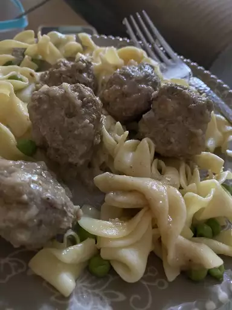

Swedish Meatballs
Traditional Swedish food dish for the family.
Integriends needed:
- 2 slices of bread
- heavy cream
- butter
- small onion
- ground beef
- ground pork
- salt
- Egg
- black pepper
Steps:
- Preheat the oven to 350 degrees F (175 degrees C).
- Place bread crumbs into a small bowl; mix in cream. Allow to stand until crumbs absorb cream, about 10 minutes.
- Meanwhile, melt 1 teaspoon butter in a skillet over medium heat; cook and stir onion until light brown, about 10
minutes. Transfer onion to a mixing bowl.
- Mix ground beef, ground pork, egg, brown sugar, salt, black pepper, nutmeg, allspice, and ginger with onion in
the mixing bowl. Lightly mix in bread crumbs and cream.
- Melt 1 tablespoon butter in a large skillet over medium heat. Pinch off about 1 1/2 tablespoon meat mixture per
meatball; form into balls. Place meatballs into the skillet and cook, turning often, until browned, about 5
minutes. Insides of meatballs will still be pink. Place browned meatballs into a baking dish, pour in chicken
broth, and cover with foil.
- Bake in the preheated oven until meatballs are tender, about 40 minutes. Remove meatballs to a serving dish.
- Pour pan drippings into a saucepan over medium heat. Whisk flour into drippings until smooth. Gradually whisk in
enough beef broth to total about 2 1/2 cups liquid. Bring gravy to a simmer, whisking constantly, until
thickened, about 5 minutes.
- Just before serving, whisk in sour cream. Season with salt and black pepper. Serve gravy with meatballs.